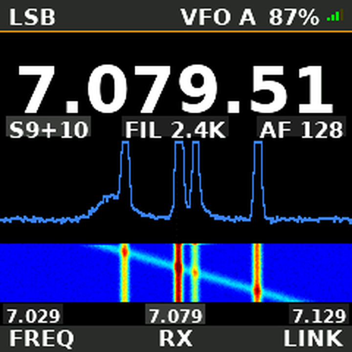
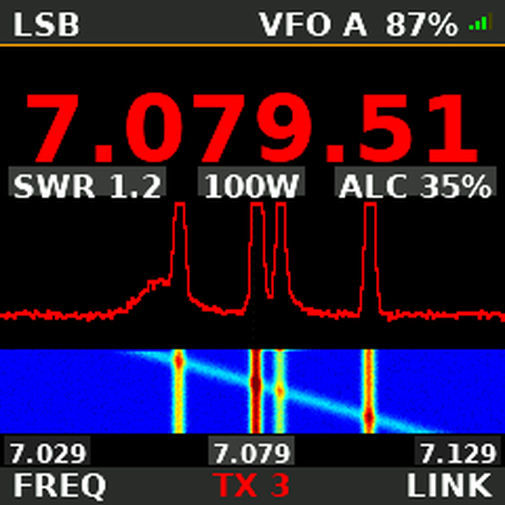

MRRC Handheld
手持电台终端
把便宜的小音箱改造成 MRRC Modern 的手持操作终端：实时频谱与瀑布、一键 PTT、 双向语音、S 表与发射功率/驻波。同一个协议、同一套界面语言，两种硬件各自取舍： S3 版跑 Opus、12 fps 高刷瀑布；C3 版去掉 codec 换 PCM16，把省下的 CPU 全给频谱与网络。

01两种机型
同一套 MRRC Modern 协议，两种硬件各自取舍。选择取决于你更在意 音频质量还是频谱刷新率与成本。
S3 版 · 星光立方 xz-02
ESP32-S3（双核 240 MHz + 8 MB PSRAM）。Opus 16 kHz 双向语音， 上行只要 12–24 kbps；手绘 framebuffer，12 fps 瀑布， 240×240 无 LVGL，有余量跑更重的界面。
C3 版 · FoloToy AI Passport
ESP32-C3（单核 160 MHz，无 PSRAM）。PCM16 16 kHz 双向，去掉 libopus 换来 92 KB flash 与 40 KB 堆；LVGL 渲染， 5.26 fps 频谱与瀑布，整机成本更低。
| 项 | S3 版 | C3 版 |
|---|---|---|
| SoC | ESP32-S3 双核 240 MHz | ESP32-C3 单核 160 MHz |
| 内存 | 8 MB PSRAM + 512 KB SRAM | 400 KB SRAM，无 PSRAM |
| 屏幕 | 240×240 ST7789 | 240×320 ST7789（圆角） |
| 音频编码 | Opus 16 kHz，12–24 kbps | PCM16 16 kHz，256 kbps |
| UI 实现 | 手绘 framebuffer，无 LVGL | LVGL 9 |
| 频谱/瀑布 | 12 fps，40 行 | 5.26 fps，40 行（每行实测） |
| 连接 | 4 条 WebSocket | 1 条 /WSterminal |
| 发射仪表 | 功率 / 驻波 / ALC | 功率 / 驻波 |
02S3 版：ESP32-S3 + Opus
一个跑在 8 MB PSRAM / 16 MB Flash 上的独立固件，通过 Wi-Fi 直连 MRRC Modern 服务器（wss + TLS），不依赖手机、不依赖浏览器。
四路 WebSocket
控制（/WSradio）、频谱（/WSspectrum）、下行音频（/WSaudioRX）、上行音频（/WSaudioTX） 各占一条连接，互不阻塞。
实时频谱 + 瀑布
850 bin 的 FT-710 原生扫频数据，12 fps 刷新；Jet 配色与 Floor/Ceil 映射和网页端完全一致，看的是同一张图。
PTT 安全链
松手先停帧、再发 s:、最后 ptt:false；180 秒硬超时；
独立高优先级心跳任务，即使 Opus 编码占满 CPU 也不会掉线。
仪表齐全
S 表、滤波器带宽、AF 增益、发射功率、驻波、ALC、电池百分比，
全部来自服务器推送的 fullState / stateUpdate。
零框架开销
不用 LVGL：240×240 帧缓冲 + 固定脏区刷新，UI 任务只在数据变化时重绘， 全程 12 fps 也只占一个核的一小部分。
一条命令烧写
分区表保留 NVS 偏移，升级固件不会丢 Wi-Fi 与激活信息；
tools/build_on_mac.sh flash 交叉编译 + 烧写一步完成。
03界面
上条为状态（模式 / VFO / 电池 / Wi-Fi），中部是大号白色频率，下面是频谱与瀑布，底部一条操作栏。

发射：功率 / 驻波 / ALC，频率转红 音量模式：底部切换为 VOL
音量模式：底部切换为 VOL
04硬件与引脚
目标机型 coolkit-xz-02（= nologo/xingzhi-cube-1.54tft-wifi
OEM 变体）。引脚不是猜的：先用 JTAG 读原厂固件运行时的 GPIO matrix 寄存器，
再逐项对照原厂源码确认。
| 功能 | GPIO | 说明 |
|---|---|---|
| LCD SCLK / MOSI | 9 / 10 | SPI2，24 MHz |
| LCD DC / CS / RST | 8 / 14 / 18 | ST7789 240×240 |
| LCD 背光 | 13 | LEDC PWM，5 kHz |
| 功放 I2S0 | 15 / 16 / 7 | BCLK / WS / DOUT，48 kHz |
| 麦克风 I2S1 | 5 / 4 / 6 | BCK / WS / DIN，16 kHz |
| 按键 | 0 / 40 / 39 | BOOT（长按 PTT，双击切模式）/ VOL+ / VOL- |
| 电池 / 充电 | 17 / 38 | ADC2_CH6 / 充电检测 |
| 电源保持 | 21 | RTC-IO mux 拉高 |
05C3 版：ESP32-C3 + PCM16
FoloToy AI Passport（ESP32-C3，单核 160 MHz，无 PSRAM）上的移植。 与 S3 版最大的区别：没有 Opus。
为什么去掉 Opus
C3 单核要同时跑 TLS、LVGL 渲染和音频，libopus 没有容身之处。 去掉后 flash 少 92 KB、堆 largest 从 17 KB 升到 58 KB， 代价是上行带宽从 12 kbps 涨到 256 kbps。
单条 WebSocket
四个端点合成一条 /WSterminal：控制、频谱、双向音频共用一次 TLS。
每帧首字节是频道号（0x00 下行音频 / 0x01 上行音频 /
0x02 频谱）。缺这个字节服务端会把 PCM 当频谱丢掉。
旋钮与方向键分工
OK 双击循环六档
FREQ → CH → STEP → FIL → VOL → MIC；
UP/DOWN 只调当前档位的值，不再兼任切档。
方向键曾经也承担切档（双击轮转），但扫频就是连续点按同一颗键，
两者抢键的结果是误触——实测按下间隔 250–420 ms 与双击无法可靠区分，
所以切档全部回到 OK。麦克风增益 0–42 dB、6 dB 一档。
发射看功率与驻波
接收时该行是 S 表；按 PTT 后自动换成前向功率（红色条，0–150 W 量程） 与 驻波。只看功率不看驻波，是烧末级的常见死法。
卡顿是五个问题
症状一样，成因五层：TCP 窗口背后的接收队列（RECVMBOX 6 /
OOSEQ 4 / RX_BA_WIN 6）、从空环开始的播放、上行跑在
Nagle 下（323 次发送里 100 次阻塞超 30 ms）、只有 4 个 MSS 的
发送缓冲，以及一级只会制造削波的软件增益。
修完：丢帧 0，服务端 queue_drops=0，削波 5% → 0。
把渲染开销砍半
两个计数器定位的：交给面板的字节数 + 同样的像素按 32 行分带。
频率与信息行占了每次重绘的 40%（文本没变也重写）；
频谱曲线占 25 个 CPU 点却只占四分之一面积——LVGL 按抗锯齿线段
计费。文本守卫 + 每 2 列一个顶点：taskLVGL 56–61% →
28–30%，重绘量 526 → 329 KB/s。
瀑布存成调色板索引
最大的一块 .bss：RGB565 19,200 B → 8 位索引 10,624 B（含调色板）。
largest 从 27–42 KB 升到 38–48 KB——PTT 的 TLS
握手要的就是连续块。代价是混合时查表的 1–2 个 CPU 点。
没有任何网络也能配网
机身那颗 NTAG213 是被动标签：手机能读，MCU 看不见，板上也没有
读卡器。所以没凭据（或连续两次连不上）时设备自己开热点
MRRC-Passport-XXXX，手机连上填一页表单即可。设置存 NVS 并覆盖
编译期默认值。同时记三个网络，按上次可用 + 音频健康度切换：
高铁上换网后丢帧 +200/分钟 → 0。
| 实测项 | 值 |
|---|---|
堆 free / largest | 49–58 KB / 36–48 KB |
taskLVGL 占用 | 28–30%（优化前 58%） |
空闲 IDLE | 约 40%（优化前 14%） |
| 重绘量 | 329 KB/s（2.2 屏/秒），优化前 526 KB/s |
| 频谱刷新 | 5.26 fps，与电台扫描率对齐 |
| 瀑布 | 40 行，每行都是实测数据，不插值 |
| 音频（稳定链路） | err=0 drop=0，写出 50.0 帧/秒、16 kHz |
| 音频（移动链路） | 丢帧 0；靠断流清环 + 优先保新数据优雅降级 |
优化过程与所有被推翻的假设记录在 docs/optimization-notes.md，链路的完整实测在 docs/transport-tuning.md，配网流程在 docs/provisioning.md，界面规格在 docs/UI.md。 这一轮的完整叙述见博客：An ESP32-C3 Terminal That Keeps Talking on a Train。
06初始设置
这台设备没有键盘、没有蓝牙、也没有 NFC 读卡器（机身上那颗 NTAG213 是被动标签， 手机能读、MCU 看不见）。所以"把 Wi-Fi 密码告诉它"只有一条路： 设备自己变成热点，手机连上去填。
上电，看屏
没有任何凭据时，屏幕直接进入 SETUP：
SSID MRRC-Passport-XXXX ·
密码 mrrcconfig ·
地址 192.168.4.1。
XXXX 是这块板 MAC 的后两字节，两台设备不会撞名。
手机连上去
在手机 Wi-Fi 列表里选 MRRC-Passport-XXXX，输入
mrrcconfig。这是设备自己发的热点，不需要任何现有网络。
打开 192.168.4.1
浏览器输入 http://192.168.4.1，一页表单：
Wi-Fi SSID 与密码、服务器地址、端口、服务器密码。默认值就是当前固件里编进去的那份。
保存，重启，连上
点保存即写入 NVS 并自动重启。重启后按 NVS 里的值连接，连上就登录并建立
/WSterminal。不需要重新编译——配网值优先于编译期默认值。
上机后先设三样
| 档位 | 怎么进 | 可选值 | 作用 |
|---|---|---|---|
VOL |
OK 双击 | 0–100%，5% 一档 | 本机喇叭音量 |
MIC |
OK 双击（再按一次） | 0–42 dB，6 dB 一档 | ES8311 输入 PGA，决定对方听你的音量 |
STEP |
OK 双击轮转 | 1K / 5K / 25K | FREQ 档每次单击的调频步进（长按连发也用同一档） |
FIL |
OK 双击轮转 | 1.8K / 2.4K / 2.7K / 3.0K | 中频滤波宽度：下发的是档位索引（filter_width），Hz 由服务端按当前模式换算；链路建立后自动补发一次 |
切档在 OK，调值在上下：OK 双击走完六档，
UP/DOWN 只改当前档位的值。四个可设定的值
（音量、麦克风增益、步进、滤波）都存 NVS，换电池也不会丢。
滤波有个坑值得记：服务端可写的是档位索引
filter_width，filter_hz 只是它按当前模式算出的只读值——
直接把 Hz 发过去会静默无效（固件最早就是这么写的）。而且阶梯按模式分组：
voice（SSB/AM/FM）与 narrow（CW/RTTY/DATA/PSK）
的索引并不相同，所以固件按当前模式选表。
esp_wifi 在链路烂透时也不报断开，所以音频健康度也参与决策：
连续两分钟丢帧超 2% 或欠载超 50 次/秒，就重新扫描换网。
MRRC-Passport-XXXX 而不是原来的 Wi-Fi（很多手机会自动切回旧网络）。
保存失败通常是 NVS 分区写满（Wi-Fi 驱动每次开机都写一条记录），
固件会打印 NVS 统计并擦除后重试一次——配网正是唯一可以安全擦除的时刻。
如果想让设备回到编译期默认值，擦掉 NVS 即可。
配网流程与代价的完整说明见 docs/provisioning.md。
07编译与烧写
需要 ESP-IDF 5.4（esp32s3 工具链）。仓库自带交叉编译脚本，可以在一台
8 核 Mac 上编译、拉回产物、再烧写到本机 USB 口。
# 1. 克隆 git clone https://github.com/cheenle/mrrc-handheld.git cd mrrc-handheld # 2. 配置服务器与 Wi-Fi（写入 sdkconfig.defaults 即可，不会进 git） idf.py menuconfig # MRRC Handheld → Server / Wi-Fi # 3. 本机编译 + 烧写 idf.py -p /dev/ttyACM0 flash monitor # 或者：在另一台 Mac 上编译（8 核约 90 秒），本地烧写 ./tools/build_on_mac.sh flash
# 手工烧写（保留 NVS：Wi-Fi 与配网信息不会丢）
esptool.py -p /dev/ttyACM0 -b 921600 write_flash \
--flash_mode dio --flash_size 16MB --flash_freq 80m \
0x0 build/bootloader/bootloader.bin \
0x8000 build/partition_table/partition-table.bin \
0x10000 build/mrrc_handheld.binesptool.py read_flash 0 0x1000000 backup.bin），
任何时候都能用 write_flash 0x0 backup.bin 回到原厂固件。
08已知限制
仅适配一种机型
引脚与 I2S 配置是为 coolkit-xz-02 固化并逐项验证的；
换板子需要改 board_pins.h 并重新确认 LCD 的字节序与反色。
麦克风灵敏度
原机 I2S MEMS 麦在语音带输出偏低，靠服务器端降噪与近讲使用； 不要用软件增益硬拉，会把直流偏置一起放大。
依赖局域网/公网服务器
终端只做显示与语音，收发信机由 MRRC Modern 服务器通过 CAT 控制；
服务器不可达时显示 noSRV 并自动重连。